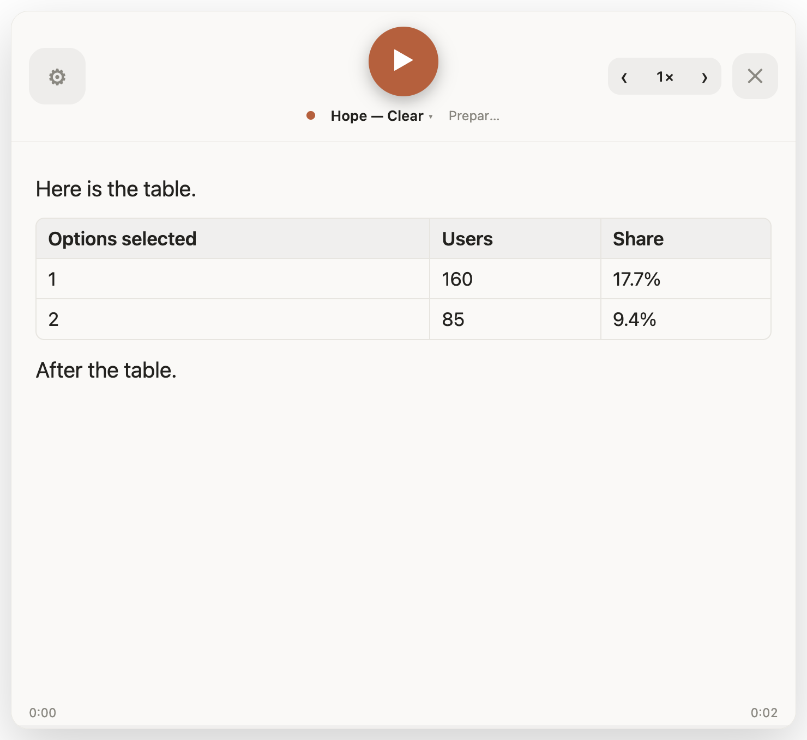
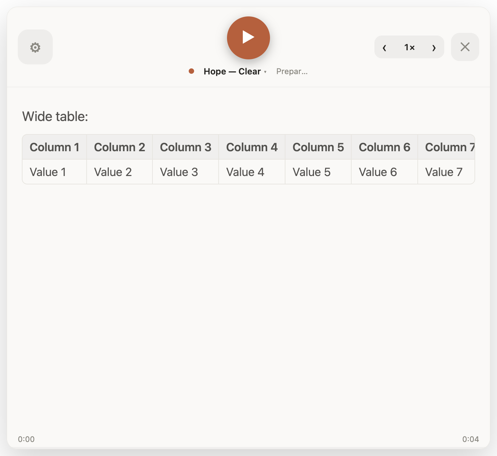
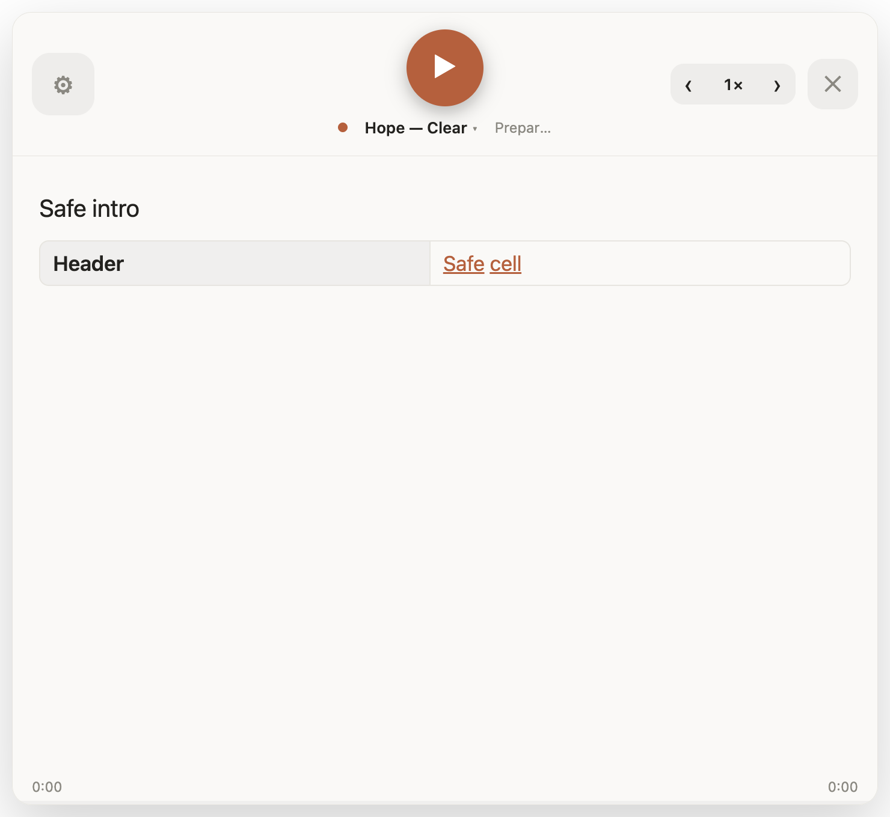
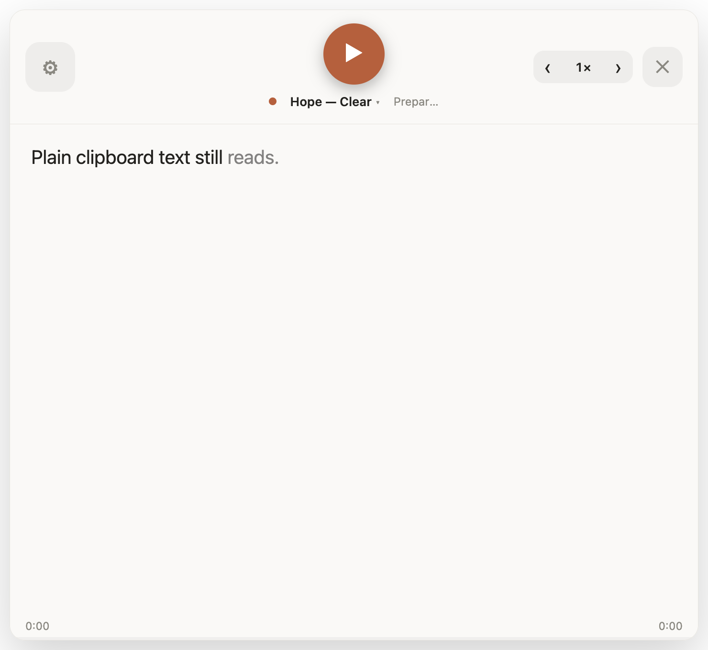

Tables stay in columns
Done with one verification limit: real Chromium overlay tests passed, while native tray/shortcut replay was deferred to avoid interrupting the user's currently playing installed app.
Fast Answer
Root cause
The rich-text allowlist replaced every table tag with div. The clipboard-menu path discarded its HTML flavor before rendering.
What changed
Safe semantic table/tr/th/td elements, readable cell styling and horizontal overflow, plus clipboard HTML forwarding.
Release boundary
The installed v0.1.4 app has not been replaced. This code needs a signed/notarized desktop release before downloaded users see the fix.
Pass criteria
Layout · Met
Three aligned columns and ordered rows confirmed by DOM geometry and screenshot. A nine-column table scrolls horizontally.
Both paths · Partial
Clipboard helper and shared overlay path passed. Native tray and selected-text actions were not replayed while the current app was reading.
Safety & sync · Met
Canonical speech order matches the fixture; hostile markup yielded zero unsafe nodes, zero script effects, and zero external requests.
End-to-end evidence
E2E-TABLE-01 · Partial
Real Electron overlay and clipboard-content helper passed, with screenshot and row geometry. The native clipboard tray click remains unrun.
E2E-TABLE-02 · Blocked
The selected-text HTML path is unchanged and shares this renderer. A live native replay would interrupt the user's current reading.
E2E-TABLE-03 · Passed
Plain text displayed unchanged. Inert table markup rendered, while active HTML and outbound requests were absent.
Checks and evidence
Automated
- 3 new regression tests went red before the fix, then green.
- 40/40 project tests and ESLint passed through the Husky commit hook.
npm run packproduced the arm64 macOS app with the new files insideapp.asar.- Production dependency audit: zero findings.
Real Chromium pop-up
- 7/7 visual/DOM/security assertions passed in
table-qa-results.json. - Four screenshots under
qa-screenshots/. - No system clipboard write, provider call, or user playback interruption.
Open the cards
Visual comparison and QA artifacts
QA plan and status · assertion output · repeatable Electron harness




Implementation and decisions
src/richtext.js rebuilds table structure with first-party elements only; it still drops all clipboard attributes and active subtrees. src/overlay.css styles a scrollable table inside the card. src/clipboard-content.js reads text and HTML together, and src/main.js sends both through the existing sanitizer/spoken-text handshake. No legacy path or provider routing changed.
Limits and delivery
The user's installed app was observed actively reading the same flattened table from the screenshot. It was intentionally left running. Native menu and shortcut E2E need a repeat when playback finishes. No PR was requested or created. The repository's AGENTS.md directs validated work to fast-forward into main; packaging here is ad-hoc for local QA, not a public notarized release.